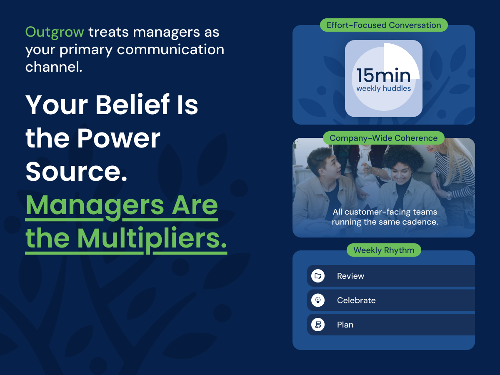
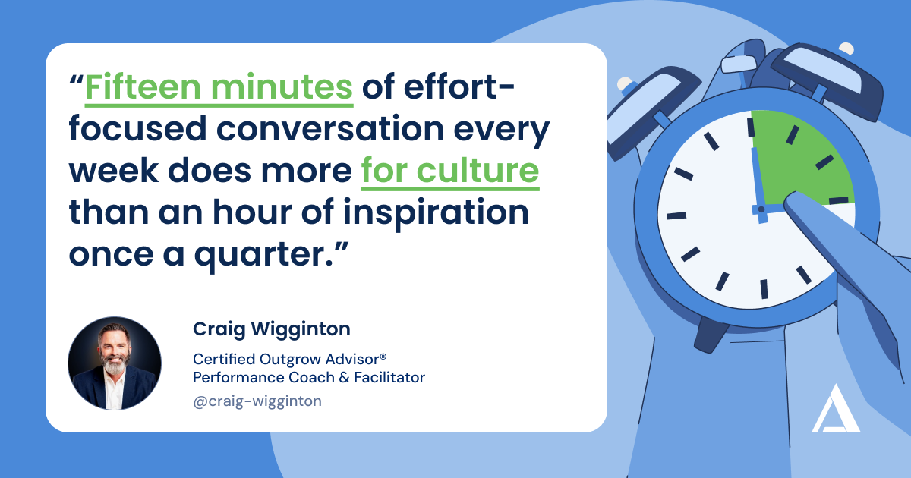
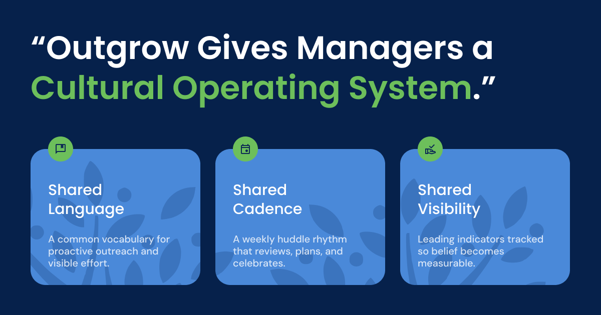

Why Your Team Isn’t Winning More (Even When They’re Working Hard)
Discover how fostering accomplishment at work drives motivation, momentum, and measurable growth across your entire sales culture.
ReadCulture & Mindset · CEO series, part 3

This article is part three of our CEO Series where we explore how managers turn proactive belief into a simple weekly rhythm that drives consistent, measurable growth.
You have been in this movie before.
You lead a strong meeting. The message is clear, the room is engaged, and everyone leaves saying the right things. Then a week later you listen to customer calls or walk a branch and it feels like a different company.
The words are still there, but the energy is not.
People are busy, but conversations are dominated by issues, tickets, and logistics. Customer interactions feel transactional. Internal meetings feel tactical. The belief that filled the room with energy has gone quiet on the front line.
This is not a leadership failure. It is what happens when complexity outruns communication. Sales, service, and operations each carry a slice of the customer experience, but they rarely share the same language or rhythm. Isolation grows. Emotionally, people move from connected to fatigued.
When connection fades, courage and boldness fade with it. Reaching out first starts to feel risky. The culture quietly becomes reactive because the company stops speaking its belief out loud.
That is the moment your culture starts depending on managers. It’s the moment proactive culture slips into reactive culture.
Your company has a voice. The problem is that it gets quieter the farther your team gets from you.
At the top, belief is strong. You are clear about growth, confident about your customers, proud of the team. But by the time that belief filters through layers of management, most teams are hearing what to do without feeling why it matters.
That gap between your intention and their interpretation is where proactive culture fractures.
Managers are the only people who can close it. They are not just task organizers. They are translators of belief. Their tone becomes the company’s tone. Their habits become the company’s habits.
When a manager leads with optimism, the team borrows it. When they lead with stress, that spreads faster.
Outgrow treats managers as your primary communication channel. Proactive culture does not live in the corporate office. It lives in the proactive actions, the short huddles, and recognition moments that managers run every week. That is how belief moves from concept to conversation to culture.
The team goes as the manager goes. And culture goes as the manager goes.

Proactive culture does not disappear when people disagree with you. It disappears when they stop talking about what you believe.
Busyness is the enemy here. As volume rises, meetings get shorter and more tactical. The language of belief gets replaced by the language of problems. For a while, the numbers may hold. But the emotional bond that makes people brave and customers loyal starts to thin out.
Positivity and optimism in conversation is how humans renew belief.
When a manager asks, “Who did we help this week” or “What opportunity did we create,” they are not just tracking activity. They are reminding people who they are. They are turning tasks into purpose.
Outgrow makes these conversations predictable. Weekly huddles, quick recognition moments, and simple reviews of proactive outreach keep belief visible:
The power is in the cadence, not the length. Fifteen minutes of effort-focused conversation every week does more for culture than an hour of inspiration once a quarter.
When managers keep talking about proactive effort and customer care, teams start mirroring that language with each other and with customers. Conversation becomes your most reliable cultural system.
Most mid-market cultures run on memory and charisma. The CEO sets the tone, everyone feels it for a while, then daily urgency takes over and people improvise their own version of the culture.

Outgrow replaces improvisation with a simple framework managers can run every week:
Everyone uses the same vocabulary around proactive outreach, helping customers more, and visible effort.
Weekly huddles with the same basic agenda. Review last week’s outreach, plan this week’s actions, celebrate specific wins.
Managers track leading indicators like proactive calls, follow-ups, and opened opportunities so belief is measurable, not mystical.
With that structure, belief gets a form. Every manager is asking similar questions, recognizing similar behaviors, and reinforcing similar stories.
Culture stops depending on inspiration from the top and starts running on rhythm in the middle.
When ten managers run the same rhythm with their own voice, you get coherence, not cloning. Branch meetings mirror headquarters. Service huddles sound like sales huddles. Customers feel the same tone wherever they land.
That consistency is incredibly rare, and very noticeable.
Here is the risk that sneaks up on successful CEOs:
Silence from the top is never neutral.
Your people are always interpreting your volume. When you talk about proactive growth often, they assume it matters. When you go quiet, they assume it does not. Managers stop reinforcing the rhythm. Teams slide back into task mode. Proactive culture cools without a single argument.
Outgrow gives you a system, but your visible belief is still the power source.
You do not need to run the weekly rhythm. You do need to energize it in small, concrete ways:
These moments do not take long, but they echo for weeks. Managers feel your belief behind their efforts. Teams feel permission to keep talking about proactive growth.
That is when culture stops depending on your presence and starts outliving it.
The companies that talk about Outgrow the most grow the most and the fastest.
Because conversation is the carrier of belief.
When your managers run the rhythm and you keep the belief alive, your company does not just sound confident in the boardroom. It carries confidence into every room.
Keep reading
Discover how fostering accomplishment at work drives motivation, momentum, and measurable growth across your entire sales culture.
ReadMeaning isn’t a luxury — it’s a performance driver. See how creating a high-performance sales culture turns morale and engagement into profit.
ReadThe issue isn't laziness. The cost of disengaged employees is lost momentum, but small, consistent actions can reignite engagement and sales.
Read